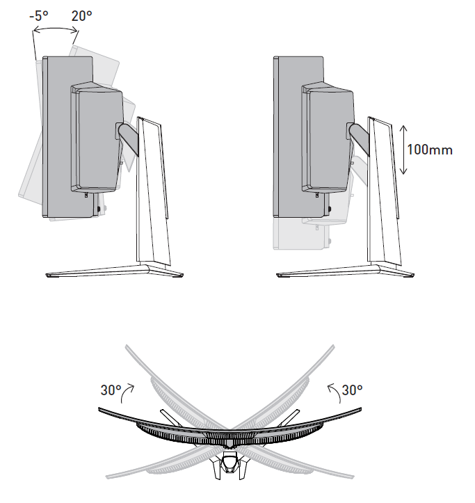
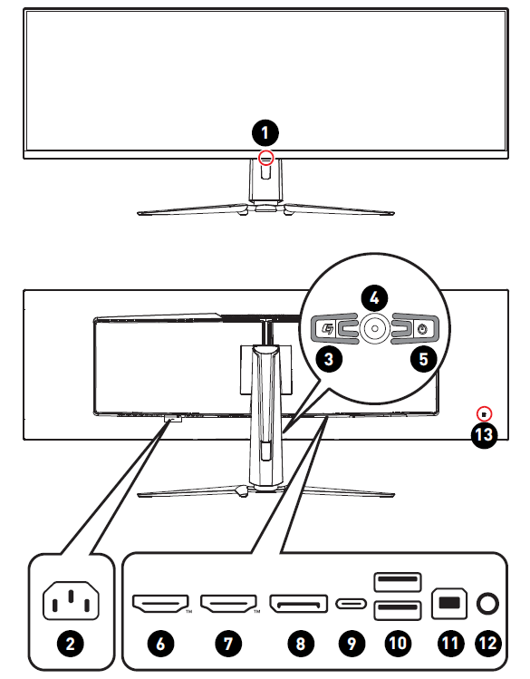

Getting Started
Package Contents
| Monitor | MPG 491CQPX QD-OLED |
|---|---|
| Documentation | Quick Start Guide |
| Accessories |
|
| Cables |
|
 Important
Important
- Contact your place of purchase or local distributor if any of the items is damaged or missing.
- Package contents may vary by country and model.
- The included power cord is exclusively for this monitor and should not be used with other products.
Installing the Monitor Stand
- Leave the monitor in its protective packaging. Align the stand to the monitor groove.
- Push the stand towards the monitor groove until it locks in place.
- Connect the base to the stand and tighten the base screw to secure the base.
- Make sure the stand assembly is properly installed before setting the monitor upright.
Important
- Place the monitor on a soft, protected surface to avoid scratching the display panel.
- Do not use any sharp objects on the panel.
- The groove for installing the stand bracket can also be used for wall mount. Please contact your dealer for proper wall mount kit.
- This product comes with NO protective film to be removed by the user! Any mechanical damages to the product including removal of the polarizing film may affect the warranty!
Adjusting the Monitor
This monitor is designed to maximize your viewing comfort with its adjustment capabilities.
Important
Avoid touching the display panel when adjusting the monitor.
Monitor Overview
| 1 |
Power LED Lit in white after the monitor is turned on. If no signal input, the LED will turn into orange. Lit in orange when the monitor is in Stand-by mode. |
|---|---|
| 2 | Power Jack |
| 3 |
Macro Key To activate MSI Gaming Intelligence Application. |
| 4 | Navi Key |
| 5 | Power Button |
| 6 |
HDMI™ Connector To activate MSI Gaming Intelligence Application. |
| 7 |
HDMI™ Connector Supports 5120x1440@240Hz as specified in HDMI™ 2.1. |
| 8 |
DisplayPort Supports 5120x1440@240Hz as specified in DisplayPort 1.4a. |
| 9 |
USB Type-C Port This port supports DisplayPort Alternate (DP Alt) Mode and up to 20V/4.9A (98W) power delivery.
Check the package for USB Upstream Cable
and connect it to the PC and monitor. Once
this cable is connected, the USB Type-A
Downstream Ports on the monitor will be
ready for use.
|
| 10 | USB 2.0 Type-A Port |
| 11 |
USB 2.0 Type-B Upstream Port For USB Upstream Cable
Check the package for USB Upstream Cable
and connect it to the PC and monitor. Once
this cable is connected, the USB Type-A
Downstream Ports on the monitor will be
ready for use.
|
| 12 | Headphone Jack |
| 13 | Kensington Lock |
Connecting the Monitor to PC
- Turn off your computer.
- Connect the video cable from the monitor to your computer.
- Connect the power cord to the monitor power jack. (Figure A)
- Plug the power cord into the electrical outlet. (Figure B)
- Turn on the monitor. (Figure C)
- Power on the computer and the monitor will auto detect the signal source.